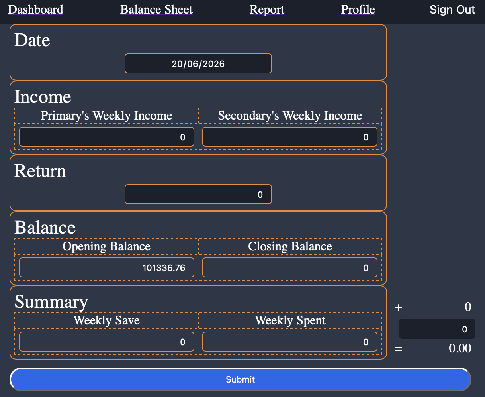
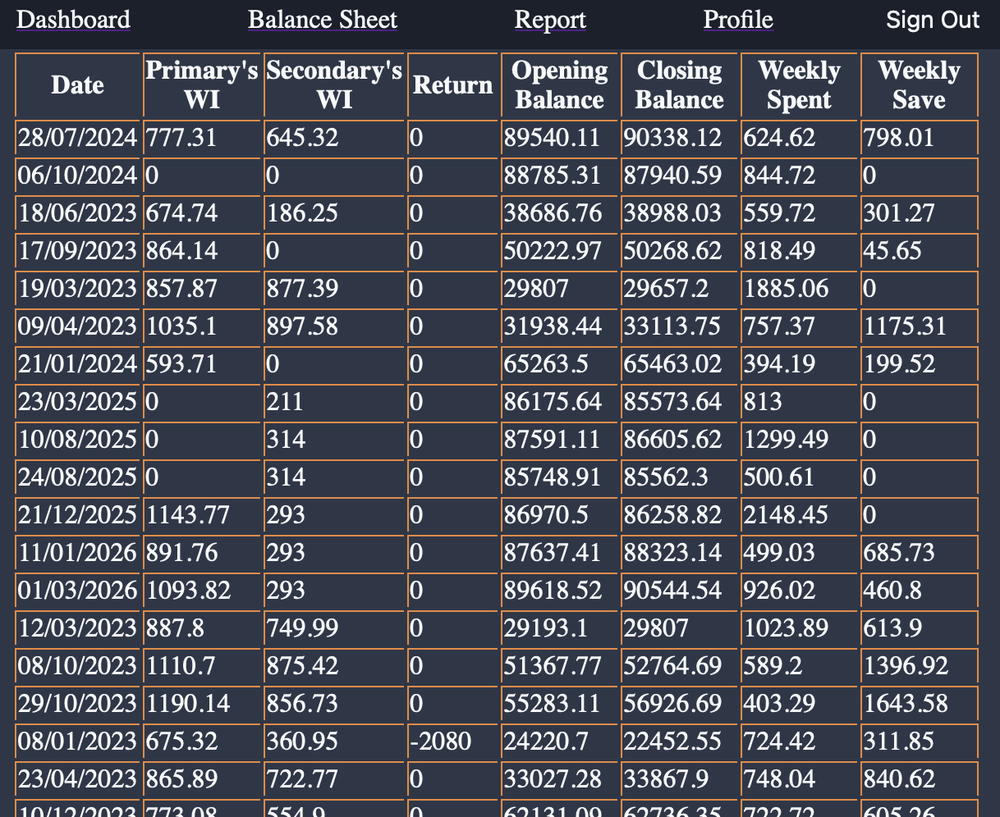
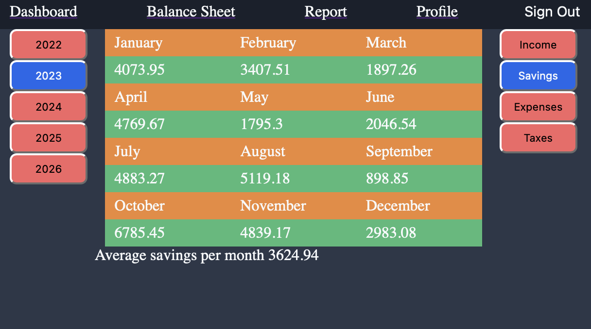

Showan Simkhada
Graduate Software Developer & Cybersecurity Enthusiast
CompTIA PenTest+, CySA+, Security+, Network+
React, TypeScript, Node.js
Hamilton, New Zealand
ABOUT ME
Graduate IT professional with commercial experience in software development and IT support. Experienced in developing applications using C#, React, TypeScript, Node.js and MongoDB, with a strong foundation in Windows administration, networking and troubleshooting. Recently completed CompTIA Network+, Security+, CySA+ and PenTest+, and currently seeking opportunities in software development, IT support or entry-level cybersecurity.
PROJECTS
FINANCE TRACKER
Full-stack personal finance management application built with React, TypeScript, Next.js, Node.js and MongoDB.
-
Tech Stack
ReactTypeScriptNext.jsNode.jsMongoDB -
Features
Expense TrackingReporting dashboardData VisualizationResponsive Design



Links:
SKILLS
-
Programming & Development
TypeScriptReactNext.jsNode.jsSQLMongoDBPythonC# -
Cybersecurity
Penetration TestingVulnerability AssessmentNetwork SecurityIncident ResponseRisk Management -
Platforms
WindowsLinuxmacOSAzureVirtualBoxVMware -
IT Support & Systems
Windows 10/11Microsoft 365Active DirectoryAzureHardware & Software TroubleshootingRemote DesktopNetwork TroubleshootingVirtualBoxVMware
CYBERSECURITY LABS
-
TryHackMe
Completed 50+ hands-on labs covering:
- Enumeration
- Privilege Escalation
- Active Directory
- Windows Security
- Linux
- Web Exploitation
-
Hacker 101
Web Security ChallengesOWASP Top 10 -
OverTheWire
Linux AdministrationSSH Security
VIRTUAL EXPERIENCE
-
Skyscanner Front-End Software Engineering virtual experience programme on Forage
-
Completed a job simulation where I built a web application using React as a front-end engineer at Skyscanner.
-
Developed a page for picking a travel date using Skyscanner’s open-source Backpack React library.
-
Customised my application and ran automated tests to ensure it rendered properly.
-
-
Datacom Software Development Job Simulation on Forage
-
Completed a simulation focussed on how the software development team at Datacom approaches their work.
-
Reviewed a web application and planned for future improvements.
-
Identified the root cause of bugs and implemented a fix to improve the application.
-
-
AWS APAC Solutions Architecture virtual experience program on Forage
-
Designed and simple and scalable hosting architecture based on Elastic Beanstalk for a client experiencing significant growth and slow response times.
-
Described my proposed architecture in plain language ensuring my client understood how it works and how costs will be calculated for it.
-
-
Datacom Service Desk Job Simulation on Forage
-
Completed a job simulation involving IT support and incident management for Datacom's managed services team, honing skills in critical issue prioritisation and resolution in a high-stakes environment.
-
Developed expertise in ITIL processes, specifically in categorising, logging, and escalating incidents, ensuring alignment with industry best practices for efficient service management.
-
Enhanced problem-solving abilities by diagnosing and resolving a complex network outage issue, employing analytical thinking to assess impact and urgency across multiple client tickets.
-
Strengthened communication skills by crafting empathetic and clear follow-up communications to affected users, demonstrating a commitment to maintaining customer satisfaction and trust during IT crises.
-
-
Datacom Cybersecurity Job Simulation on Forage
-
Completed a simulation focussed on how Datacom's cybersecurity team helps protect it's clients.
-
Investigated a cyber attack and produced a comprehensive report documenting findings and outlining key recommendations to improve a client's cybersecurity posture.
-
Conducted a comprehensive risk assessment.
-
EXPERIENCE
-
Professional Experience
Rennacs Limited | Hamilton, Waikato
Jul 2019 - Nov 2020
Software Developer and General Support
-
Developed and maintained web applications, ensuring code security, data integrity, and performance optimisation.
-
Debugged and tested software to identify potential vulnerabilities and system weaknesses.
-
Worked closely with developers, IT teams, and stakeholders to improve system functionality.
-
-
Additional Employment
Process Worker
Inghams Enterprises (NZ) PTY Limited | Cambridge, Waikato
Oct 2025 - Present
Process Worker
OP Columbia | Whitianga, Waikato
Feb 2022 - Aug 2024
Courier Driver
Patialvi Enterprise Limited | Hamilton, Waikato
Nov 2020 - Oct 2021
CERTIFICATIONS
CompTIA PenTest+ (May 2025)
CompTIA Cyber Security Analyst (CySA+) (Apr 2025)
CompTIA Security+ (Mar 2025)
CompTIA Network+ (Feb 2025)
EDUCATION
Graduate Diploma in Information Technology
Waikato Institute of Technology
Graduated: 2019
Relevant Coursework:
- Project Management
- Information System Essentials
- Object Oriented Programming
- Game Development
- Principals of Software Testing
- Mobile Application Development
- Data Warehousing and Business Intelligence
CONTACT
Let's Connect
I'm currently seeking Graduate Software Development, Junior Development, IT Support, Service Desk and Entry-Level Cybersecurity opportunities across New Zealand. If you'd like to discuss a role or collaboration, I'd love to hear from you.
Hamilton, New Zealand
showansimkhada@email.com